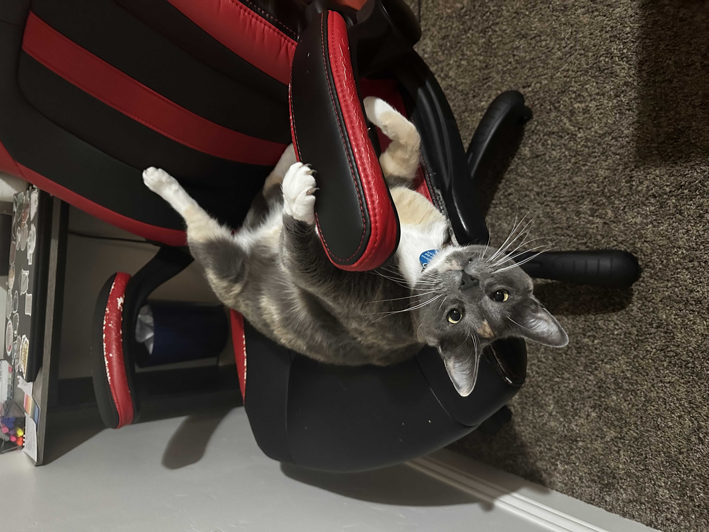

Australia Benzonate Ostylezene Bicarbonate Pancake Ramen Noodle Seasoning Packet Paintbrush Clawdia Terminator Fluffy Bjornsson Rasmussen
Aussie goes by many names, but her most favored nickname is Mrs. Pootini or General Poot. She joined the Rasmussen Family in February of 2020. Her previous family was unable to give her the life she desired (indoor lifestyle) and the husband was allergic so they surrenderd General Poot to Courtney and Mitchell. She is part Maine Coone and is gregarious to all. Visitors come and you can see her rubbing up against their legs, no matter the gender. She greatly enjoys her time in the sun, her preferred location being behind the curtains by the back sliding glass door. This allows her to soak up the sun. Aussie is loud in her displeasure and even louder in her purrs.